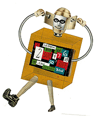

by Simson L Garfinkel
art by Dave Plunkert
Think about it. Although anonymity might be nice for a few college pranksters or a whistle-blower trying to file a complaint with the OSHA, most people using the Internet like to know the identity of the person or organization with which they are communicating. If you are trying to do business on the Internet, a person's name isn't just something that's nice to have -- it is an essential ingredient if you need to enforce the provisions of a contract.
For more than a year, Web sites using the Netscape "secure" Commerce Server have had a digital ID nailed to their door. The ID contains the name of the company with which you are doing business, and is digitally signed so that it can't be forged. Originally developed by RSA Data Security, the electronic ID card business was spun off in May 1995 to a Silicon Valley start-up named VeriSign. Other funding for VeriSign came from VISA International, Mitsubishi and big names in the computer security field like Fischer International.
VeriSign's Server Certificates, as the Web IDs are called, are a good gig. The IDs cost $295 each, are sold directly by the company over the Internet and need to be renewed every year for $99. But VeriSign wants more: Now it is out to make its trademarked "Digital ID" the driver's license of cyberspace. Just like a bar carding you to check your age, or a car rental firm checking your ID to get your permanent address, VeriSign hopes that cybermalls and shops will soon be asking you to present your Digital ID when you step into their electronic establishments.
We're VeriSign: Trust Us
If you have ever used Netscape Navigator, then you have a relationship of electronic
trust with VeriSign. That's because VeriSign's public key is built into
every copy of Navigator that's ever been shipped.
Netscape Communications used to brag about this fact. The implication was that
having a single key somehow added a level of security and assurance to doing
business on the Internet. The idea was that if you were looking at a "secure" Web
site -- that is, if you were using Netscape's proprietary encryption system to
exchange secret information over the Internet -- and you wanted to verify the
authenticity of the organization with which you were communicating, you could
simply select the menu "View Document Info."
Try it right now. Go to the URL www.vineyard.net/ and pick View Document
Info. You'll probably see the message, "This is a secure document that uses a
medium-grade encryption key suited for US export (RC4-Export, 128 bit with 40
secret)." You'll also notice that the document is signed with a certificate belonging
to Vineyard.NET, Inc., Vineyard Haven, Mass., US (the Web site in my basement).
Look further, and you'll notice that the certificate was issued by the Secure Data Server Certificate Authority, RSA Data Security, Inc., U.S. That's because in mid-
May, I paid VeriSign $295 on my credit card and bought myself a Web server
certificate.
Hey, wait a second! What's going on? If I bought the certificate from VeriSign,
how come
it has RSA Data Security's name on it?

I posed this question to Stratton Sclavos, VeriSign's president & CEO. It's an
important question, because under VeriSign's own policies, when a company
changes its name, its certificates are supposed to be automatically revoked and the
company is forced to get new certificates under its new operating name. Why then, I
asked Sclavos, is VeriSign appearing to break its own rule, and use a key that
belongs to another organization?
"The RSA Secure Server is what we issue our certificates under," he said. "The
future versions of the Navigator that are in beta right now will include VeriSign CA
(certificate authority) roots."
Apparently, there are simply so many copies of Netscape Navigator 1.0 and 2.0
on the Internet right now, that it would be impractical for VeriSign to start issuing
certificates under a new key or a new name. If they change their master key, all of
those millions of copies of Netscape Navigator won't be able to go into secure
cryptographic mode.
This dilemma neatly illustrates the single biggest complaint that's been levied
against VeriSign to date: The company was created to be a monopoly for Internet
identification, and it has largely been acting as one -- making up its own rules,
expecting others to abide by them and then breaking its rules when it sees fit.
Over the past year, there have been persistent rumors that VeriSign has been a
difficult company to do business with -- to put it mildly. Privately, companies have
said that VeriSign has been slow to renew keys for the Netscape Commerce Server
(which, remember, expires every year). Another rumor is that the company has
asked for more than the publicly stated $99 renewal fee. But in every case, critics
have been unwilling to speak on the record to the press. Why? Possibly, because
VeriSign holds the master key. If VeriSign doesn't renew a
company's certificate, then that company's secure Web server stops working.
Circumstances like these put VeriSign in a very powerful bargaining position.
But with the advent of Netscape's Navigator 3.0, the VeriSign monopoly has been
broken. Unlike previous versions of Navigator, which only supported
a single Certificate Authority, Navigator 3.0 allows you to have as many CAs as you
wish. The program comes out of the box
with several different master certificates embedded inside it: AT&T Research, AT&T,
RSA Secure Server, CommerceNet, MCI
Mall, Netscape Test, RSA Commercial and two keys for VeriSign.
The Digital ID That Doesn't
The real hoopla for the second half of this year isn't going to be certificates for
Web servers and organizations, but for users. It's these certificates that VeriSign is
calling its Digital IDs.
To create a Digital ID, all
you need to do is click into VeriSign's Digital ID Center.
After you answer a few questions and click on some of the
links, a special (and undocumented) piece of HTML will be downloaded into your
copy of Netscape Navigator 3.0 that will cause your program's cryptographic wheels
to start spinning.
From the outside, it will look like your copy of Navigator has crashed. But what's
really happening is that it's searching for 100-digit prime numbers that will be used
to create your secret and public key. Once these keys are created, the secret key is
stored in a file on your hard disk -- optionally encrypted with a pass phrase of your
choice. The public key is both stored on your hard disk and a copy is sent to
VeriSign's master computer where
it is signed by VeriSign's secret
key and sent back to you. Congratulations, you now have a Digital ID.
If a Web site wants you to "sign your name" with your Digital ID, your browser
should pop up a window and show you a list of certificates that you can send. What
happens next is kind of interesting. The Web site sends you a random number. Your
Web browser signs this number with your secret key. Your browser then sends the
signed number, your public key and your Digital ID certificate to the Web site. At the
other end of the connection, the Web site verifies your signature on the random
number with your public key and then it verifies VeriSign's signature on your Digital
ID. Finally, it checks to make sure that the public key you provided is the same as
the public key on the Digital ID. If all of these checks pass, then you must be you.
The point to having Digital IDs is that they're supposed to be much more secure,
more flexible and more powerful than the usernames and passwords that many Web
sites, from HotWired to The New York Times, are using for identification. Here are
some of the stated advantages:
- Instead of having a different password (and possibly username) for each site,
you need only one Digital ID. If you decide to protect your secret key with a
password, you get the same password with every Web site and that password never
travels over the Internet.
- Since your Digital ID carries your e-mail address, you don't have to type it in.
Even better, the Web site doesn't have to e-mail you a username and password to
the e-mail address you provide
in order to establish that it's
legitimate.
- Because your public key is a real RSA cryptographic public key, people can use
it to send you encrypted e-mail over the Internet. Indeed, support for encrypted
e-mail is planned for future versions of Netscape Navigator.
Search through VeriSign's Web site (or simply jump to http://digitalid.verisign.com/ and you'll find a spiffy question-and-answer session with Andreessen, including the boy-wonder's pouting photograph and the proud legend, "DIGITAL ID HOLDER NUMBER: 1."
The only problem with Andreessen's Digital ID is that VeriSign's Digital ID really isn't an ID, in that it doesn't identify Andreessen in any conventional sense of the word. Andreessen's photograph is on the VeriSign Q&A and it's on his California state driver's license, but his photograph does not appear on his VeriSign Digital ID.
"My Digital ID proves that I am Marc Andreessen as I communicate with others and navigate over the Internet," says Andreessen. Except it doesn't. All that his Digital ID proves is that he happens to have the matching secret key that goes with a public key on file at VeriSign.
Indeed, Andreessen's Digital ID doesn't even prove that he is a human being. That's because it's a Class 1 Digital ID, which VeriSign hands out for free to anybody with an e-mail address. You could, for example, write a computer program that goes to VeriSign's Web site and obtains hundreds of Digital IDs, each one for a slightly different e-mail address. All Andreessen's Digital ID proves is that he could have, at some point in the past, received e-mail at the address marca@netscape.com.
"I can automatically identify myself when I visit secure sites without having to remember my different username and password combinations," says Andreessen. True enough. In fact, with his Digital ID buried inside his copy of Netscape Navigator, Andreessen can now automatically provide his e-mail address to any Web site that he visits. He probably knows that, when he clicks on the Navigator button to send his Digital ID, but will your mother?
It gets even more interesting if you search VeriSign's "Digital ID Center" for Marc Andreessen's name. I tried it, and I didn't find just one single Digital ID: I found five of them, for the e-mail addresses marca@netscape.com, Marca@netscape.com, marca@ Netscape.com, MarkA@netscape. com and MarkA@Netscape.com.
How's that for positive identification? "On the Internet, nobody knows if you are Marc Andreessen."
One Size Doesn't Fit All
VeriSign probably realizes that a Class 1 Digital ID isn't worth the virtual paper
that it's written
on -- that's why the company is giving them away free for non-
commercial use. For VeriSign,
the real action is going to be at
the higher certification levels -- Classes 2, 3 and 4.
To get a Class 2 Digital ID, VeriSign will require that your identification be verified
by Equifax, one of the nation's big three
credit reporting agencies. Class 3 IDs will require a notarized affidavit. And the
company still hasn't made public the conditions for getting one of its Class 4 IDs --
"contact VeriSign" is what the company's Web site says.
It turns out that other people aren't exactly comfortable with this new world of
digital identification that VeriSign is promulgating. Take Carl Ellison, a senior
systems engineer at CyberCash, who has spent much of his professional life thinking
about the issue of public key cryptography.
The main problem with VeriSign's approach to identification, says Ellison, is that
different people have different needs for identity, and therefore have different
notions of what proper
identification is. "Some people mean a name. Some people mean a human body.
Some people mean that guy I met long ago. Some people mean any person who
can be tracked down and
punished, in case of default of a contract."
For example, if you are sending e-mail messages to your lover, you don't really
care if that person's legal name is Juliet Capulet or Julie Capulet. All you care about
is that your e-mail is only going to be read by her, by nobody else, and that when
she sends you a letter in return that is signed, it really came from her and from
nobody else.
Likewise, says Ellison, if you're a shipping clerk looking at a signed purchase
order, you really don't care whose
signature is on the form, or who pulled the crank of the
signature machine. All you care about is that the company whose name is at the top
of the purchase order will honor its promise to pay your company.
Fundamentally, there's no good reason why lovers and companies won't eschew
VeriSign and simply sign each others' keys. Indeed, that's what Xcert Software is
hoping users will do. The Canadian firm has developed its own software suite that
mimics what VeriSign's does. The difference is that, instead of
selling certification services, Xcert is actually selling the
software.
"Our model is very different than VeriSign's," says Diana Costain, the company's
vice president of finance. "We allow anyone to have their own CA. For example, if I,
as a person, am dealing with my local corner grocery store, I don't want them to
have all of that information about me -- my social insurance number, credit card
number, [whether or not] I have a criminal record -- just so I can buy a pack of
gum."
Instead, says Costain, companies using the Xcert software will certify their own
customers -- at least to the best of their own abilities.